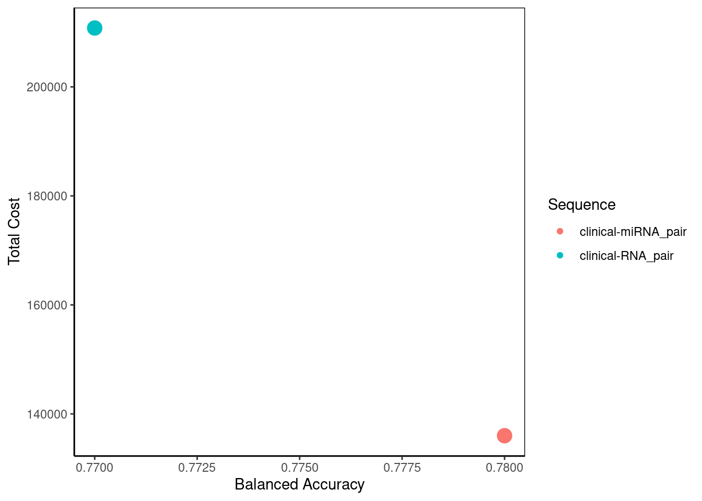
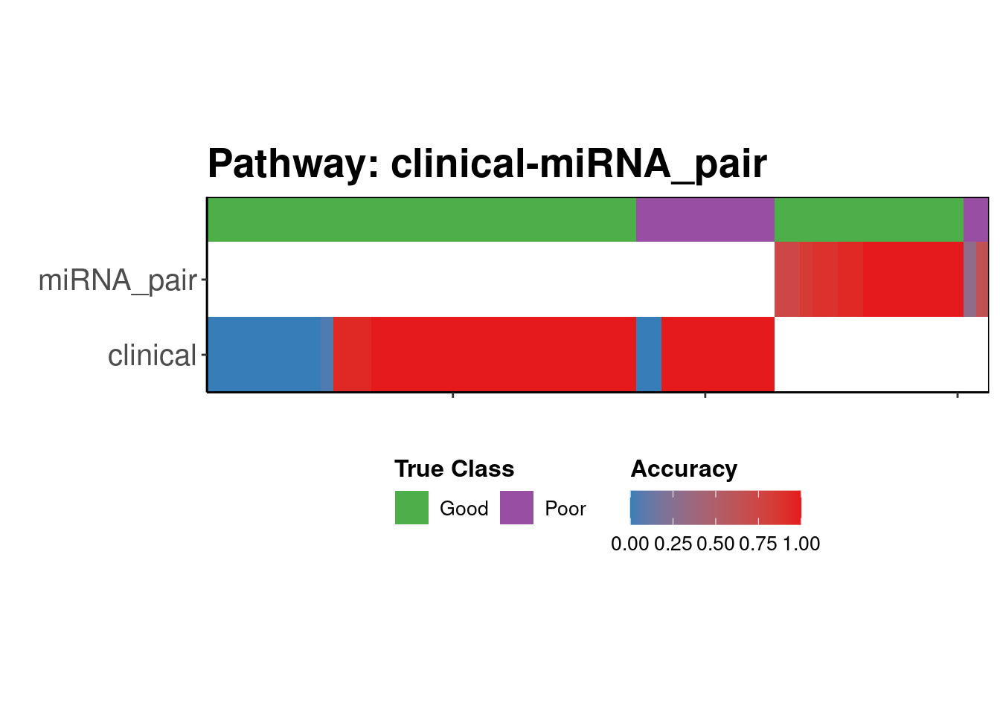

library(ClassifyR)4 Procedure 3
4.1 Intro
Procedure 3 aims to construct a multi-platform precision pathway for determining the prognostic outcome of melanoma patients. This mimics a clinical diagnostic pathway, where given the results of a diagnostic test, a confident decision may be made, or the patient may be referred to collect more data from a different platform.
For this analysis, clinical data in addition to sequencing data from two platforms are employed for 62 samples and the data is accessible at Melanoma Explorer53. The first is an mRNA dataset assayed using Sentrix Human-6 v3 Expression BeadChips (Illumina, San Diego, CA). The second is a microRNA dataset with expression profiling performed using Agilent Technologies’ microRNA platform (version 16, Agilent Technologies, Santa Clara, CA). The prognosis outcome is classified as “Good” if survival is greater than 4 years from the date of tumor banking and “Poor” if survival is less than 1 year from the date of tumor banking. Patients who do not match a “Good” or “Poor” prognosis are excluded from analysis.
4.2 Set up the environment and data objects
1. Load the R packages into the R environment
Timing ~ 6.5s
ClassifyR is used to perform all the demonstrated analyses below.
2. Import preprocessed datasets for analysis
Timing ~ 0.82s
mel_mae <- readRDS("data/procedure3/MultiAssayExperiment.rds")
colData(mel_mae)DataFrame with 62 rows and 4 columns
pathology_T_stage Outcome sex age
<numeric> <character> <numeric> <integer>
TCGA-BF-A1PX 5 Poor 2 56
TCGA-D9-A4Z2 5 Poor 2 50
TCGA-EB-A3Y7 4 Poor 1 86
TCGA-DA-A1I7 1 Good 2 62
TCGA-DA-A1IA 3 Good 1 32
... ... ... ... ...
TCGA-FS-A1ZM 3 Good 2 74
TCGA-WE-A8ZR 5 Poor 2 49
TCGA-FS-A4FD 3 Good 2 39
TCGA-WE-A8K1 4 Good 2 74
TCGA-WE-A8ZO 4 Good 1 73This command reads in a preprocessed MultiAssayExperiment containing two assays: miRNA and mRNA. Pairwise ratios of gene expressions are used as predictive features. The miRNA assay contains 62 samples and 34351 features while the mRNA assay contains 62 samples and 14689 features.
3. Creating a prognostic precision pathway
Timing ~ 260s
set.seed(1)
pp <- precisionPathwaysTrain(mel_mae, "Outcome")
pp <- calcCostsAndPerformance(pp, setNames(c(0, 12400, 8000), c("Clinical", "RNA_pair", "miRNA_pair")))The set.seed(1) command ensures that any subsequent operations involving randomness yield consistent results across runs. The second command trains a multi-platform precision pathway using the two assays given the prognostic outcomes in the “Outcome” column in colData(mel_mae) Finally, the costs and performance of each potential pathway is calculated. Here, the cost of using clinical, mRNA and miRNA data have respectively been approximated to $0, $12400 and $8000.
4. Precision Pathway Evaluation
Timing ~ 1.4s
summary(pp) Pathway Balanced Accuracy Total Cost Score
1 clinical-RNA_pair 0.77 210800 1
2 clinical-miRNA_pair 0.78 136000 2Given the costs provided earlier in calcCostsAndPerformance, this command outputs the summary of performance and cost of each potential pathway for evaluation. There are two possible pathways proposed: using clinical then mRNA data or using clinical then miRNA data. Both pathways achieve the same balanced accuracy of 0.75 but due to the lower cost of miRNA sequencing, the second pathway attains a higher score and is the preferable option for prognostic purposes.
bubblePlot(pp)
This bubble plot visualises the summary created above. In a situation with more potential pathways, it would allow greater ease in selecting the best pathway to optimise cost and performance. Here, clinical-miRNA would be the preferred pathway due to its lower cost while achieving the same balanced accuracy.
flow = flowchart(pp, "clinical-miRNA_pair")Given that clinical-miRNA is the selected pathway, this function creates a flowchart to show the stepwise process for determining melanoma prognosis. Clinical data is first used to classify patients into three prognosis groups: • Good prognosis: 44% of patients (27 out of total 62). • Uncertain prognosis: 21% of patients (13 out of 62) • Poor prognosis: 35% of patients (22 out of 62). Thus, clinical data alone classifies 71% of patients (Good + Poor groups), while 21% requiring further assessment.
For the Uncertain prognosis group (13 patients), additional analysis using miRNA pair data refines the classification: • Good prognosis: 19% (12 patients) are identified as “Good.” • Uncertain prognosis: 0% (0 patients) remain “Uncertain.” • Poor prognosis: 2% (1 patient) is reclassified as “Poor.” This is why a potential pathway incorporating clinical, mRNA, and miRNA data was not considered, as the first two datasets alone provided a prognosis outcome for all individuals.
strataPlot(pp, "clinical-miRNA_pair")
This function creates a plot which allow us to visualise where the prognosis went wrong. A large amount of blue in the clinical row under the green, suggests that this pathway made the most errors in prognosis when first using clinical data, as it classified many “good” prognosis patients with “poor” prognosis. However, clinical data performed comparatively much better on “poor” prognosis patients due to the lesser proportion of blue. For the individuals who continued to use miRNA, there was high sensitivity in identifying individuals with a good prognosis but its specificity was limited as some individuals with a poor prognosis were misclassified as having a good prognosis.